All projects
Projects
UAV design, aerospace engineering, computational analysis & more.
Design & development of a high altitude long endurance UAV
A thorough study of existing HALE platforms revealed a clear gap. No small-scale, locally manufacturable HALE UAV had been developed for regional use. All current systems are large, costly, and designed for military or industrial-scale operations, leaving significant room for optimisation at a smaller scale.
This project set out to fill that gap by developing a compact HALE UAV tailored for local manufacturing and regional deployment, studying hybrid energy systems and energy-efficient flight strategies at small scale. The aircraft integrates autonomous thermal soaring, intelligent path planning, and high-efficiency batteries, with the airframe designed for future solar integration to extend endurance beyond battery limits.
The design was validated through CFD, FEA and FSI analysis using an MDO framework, then successfully prototyped and flight tested at altitudes up to 4,000 m.
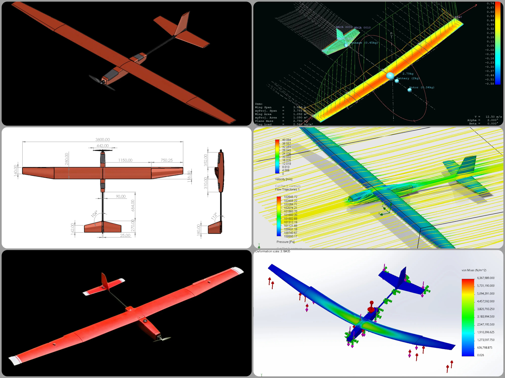
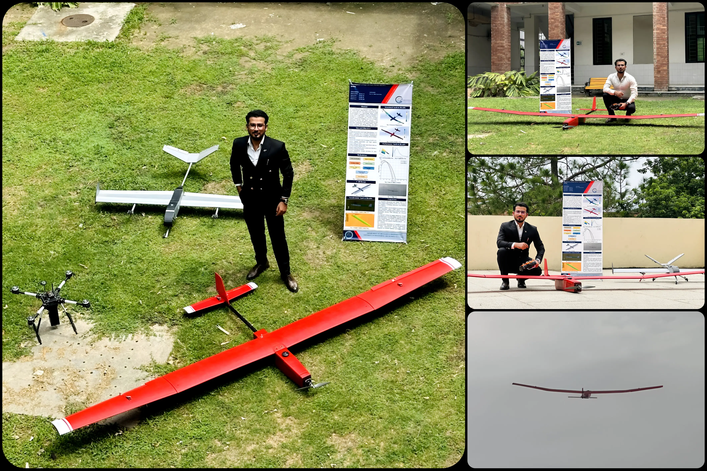
Solar-powered flying wing UAV
Conceptual design, detailed CAD modelling, and aerodynamic–structural evaluation of a solar flying wing UAV for multi-day endurance operation at medium altitude. Full CFD, FEA, and FSI analysis performed using SolidWorks Flow Simulation and Structural Solver, with aerodynamic stability evaluated in OpenVSP and XFLR5. Avionics integration includes autopilot system, autonomous navigation, and thermal soaring strategies for extended endurance beyond battery limits.

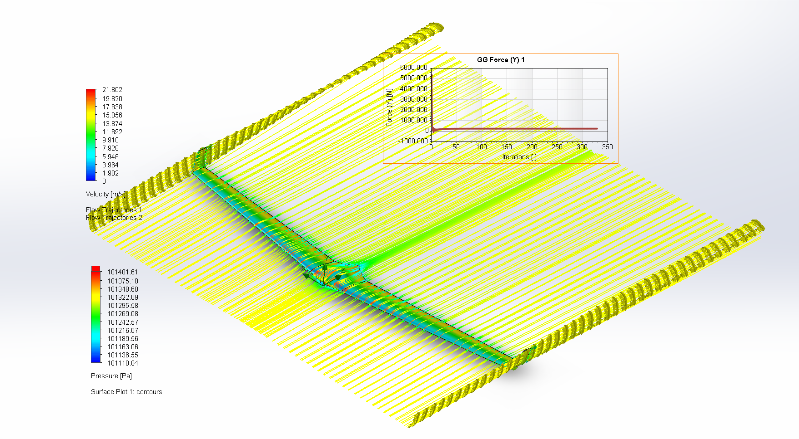
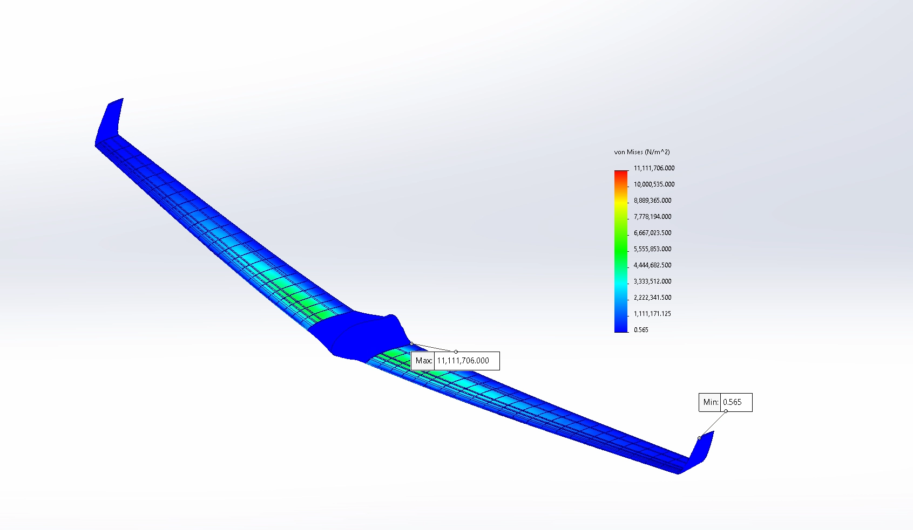
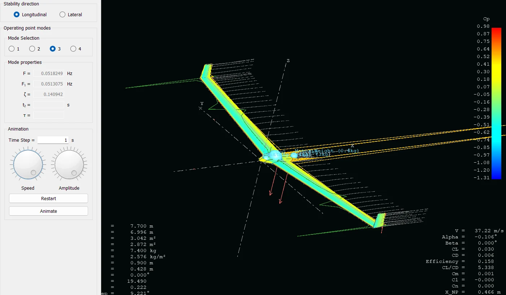
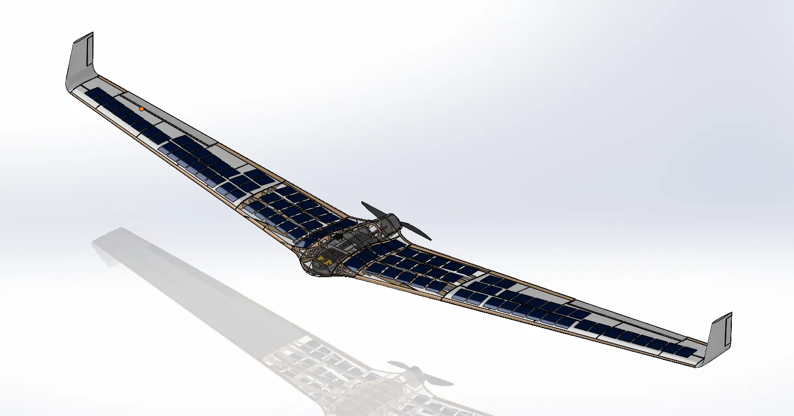
Pasban H-VTOL
Pasban H-VTOL is a long-endurance hybrid VTOL UAV designed for persistent intelligence, surveillance, and reconnaissance operations. The platform combines vertical takeoff and landing capability with a fixed-wing cruise configuration, enabling rapid deployment from confined or unprepared locations while maintaining high aerodynamic efficiency over extended missions.
Equipped with an AI-enabled EO/IR optical payload, it provides real-time day-and-night imaging for border surveillance, area monitoring, and search and rescue operations. The platform serves as a dual-use system, equally suited for civilian and defence applications including infrastructure inspection, disaster response, and persistent wide-area observation. It can also function as an airborne command node, coordinating with other aerial assets including unmanned aircraft. Hybrid electric-gasoline propulsion enables airborne endurance exceeding 8 hours and mission coverage up to 100 km.
Responsibilities covered the full design cycle from conceptual sizing and detailed CAD modelling to structural and aerodynamic evaluation, design for manufacturing, avionics integration, and path and mission planning.
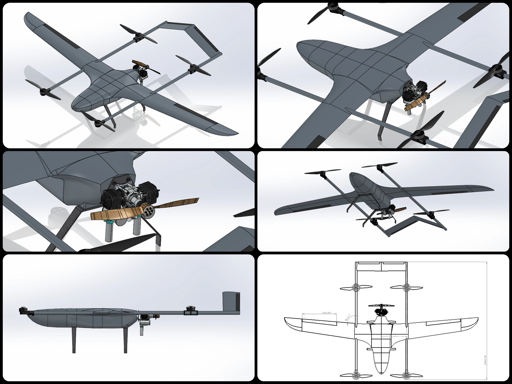
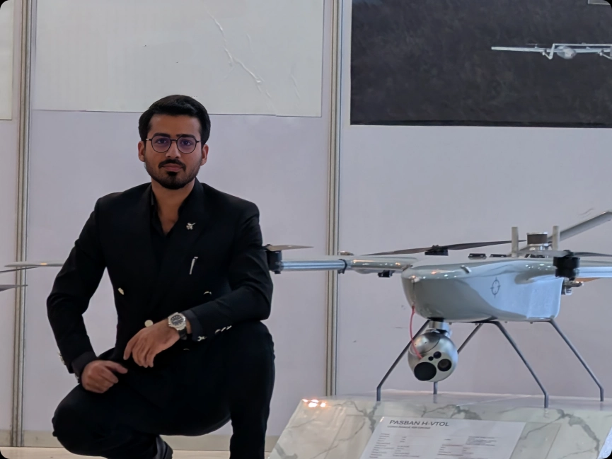
Hadaf: Fixed-Wing UAV
Hadaf is a long-range, GPS-guided fixed-wing UAV designed for flight operations across diverse operational environments including open sea, desert, and high-altitude zones. Powered by a gasoline engine and carrying a 10 kg mission payload, it delivers a 300 km range with AI-assisted target identification for autonomous terminal engagement. Its low radar signature airframe and multi-environment operability make it effective against both stationary and mobile targets with minimal collateral damage.
Responsibilities covered conceptual design, design for manufacturing, structural analysis, and multidisciplinary optimisation for long-range operations.
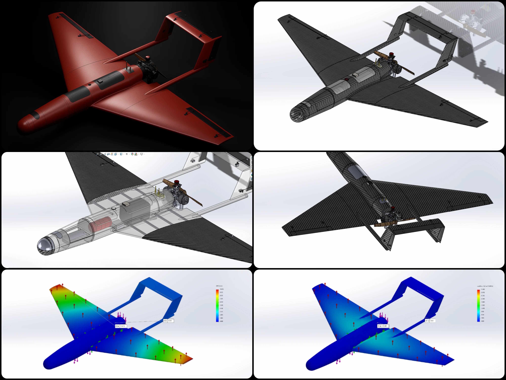
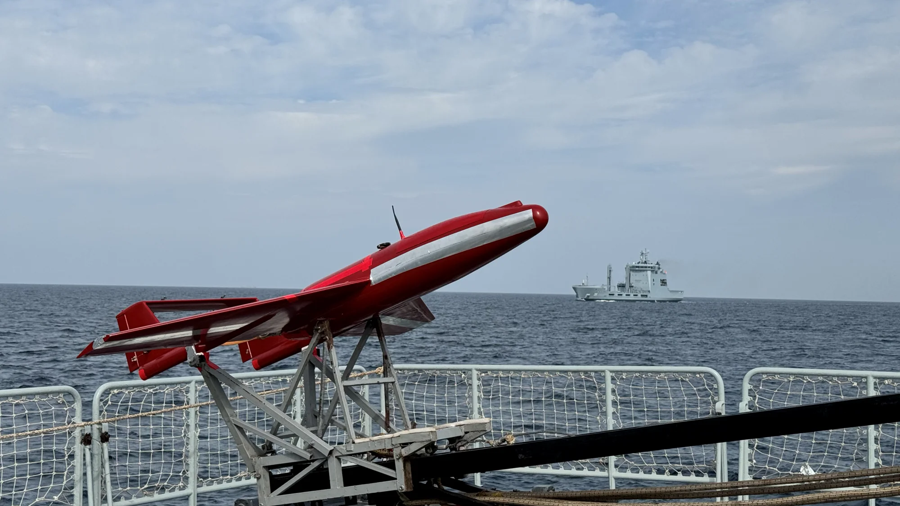
Tinkerbell Helicopter: Housing, Duct & Mount Design
Designed and optimized the housing, duct, and engine-mount components for the Tinkerbell coaxial helicopter, combining detailed CAD development with structural evaluation in SolidWorks Simulation. The work focused on improving load distribution, reducing stress concentrations, and refining component interfaces for additive manufacturing. Iterative static FEA increased the engine mount’s minimum factor of safety from 0.63 to 2.1 under the specified engine force and torque loads. A revised mounting arrangement incorporating metal reinforcement tubes, heat-set inserts, and fasteners achieved a minimum factor of safety of 1.54.
Additional work included transmission-mount optimization and modal analysis to characterize the engine mount’s vibration behavior. Responsibilities covered CAD redesign, hardware integration, material definition, mesh refinement, and repeated structural analysis across successive design iterations.
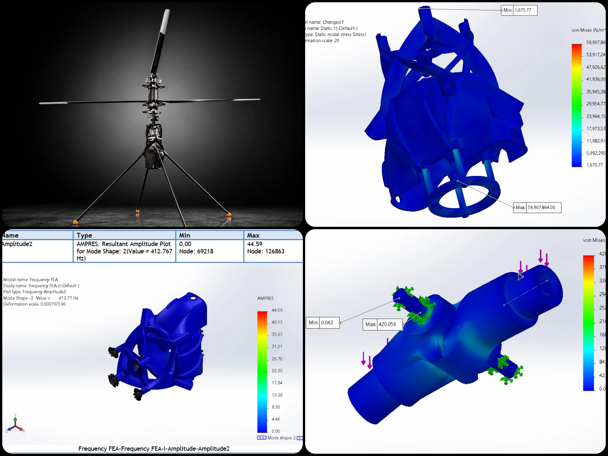
Shahab-SMF: Fiber-Optic-Controlled Quadcopter
Shahab-SMF is a jam-resistant, fiber-optic-controlled quadcopter equipped with a 2 kg payload and a 5 km operational range. Leveraging fiber optic communication, the system bypasses RF jamming entirely, ensuring secure and uninterrupted control in contested environments. Propulsion is fully electric with carbon fiber and reinforced plastic construction for a lightweight, low radar signature airframe suited to rapid deployment by ground forces.
Integrated with an AI-assisted target detection and locking system, the platform enables accurate target acquisition and stable terminal guidance for mission execution. Its intelligent guidance architecture, combined with real-time visual feedback, delivers consistent engagement accuracy across urban warfare, counter-EW operations, and high-threat tactical environments.
Responsibilities covered complete CAD design, 3D printing, compression moulding, autopilot integration, and control systems development.
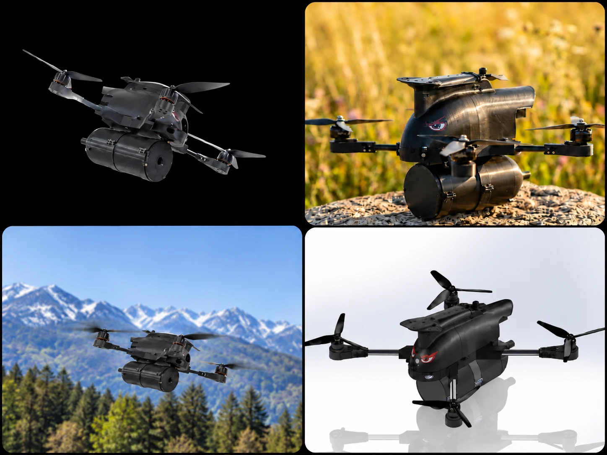
Portable Long-Endurance High-Altitude UAV
Designed and developed a portable fixed-wing UAV optimised for long-endurance, high-altitude operations (up to 5 km altitude, 20 km radius, and 1 hour of flight) with a strong focus on cost-effectiveness. The airframe uses a foamcore structure coated with epoxy and reinforced with carbon fiber, achieving a lightweight yet durable build. Pixhawk 6X flight controller provides precise sensing and control throughout the mission envelope.
TBS Crossfire enables low-latency control within a 10 km mission radius. Autonomous thermal soaring detects and leverages thermal currents to extend endurance with optimised path adjustments, reducing energy consumption significantly over long sorties. The platform was demonstrated at a university guidance session for other students.
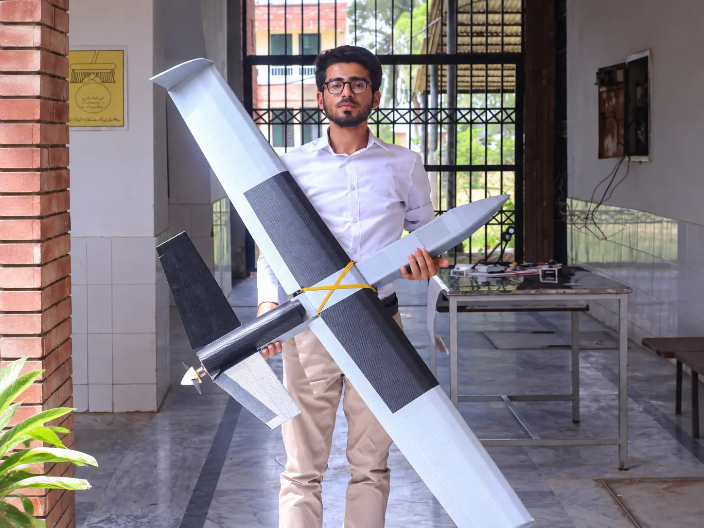
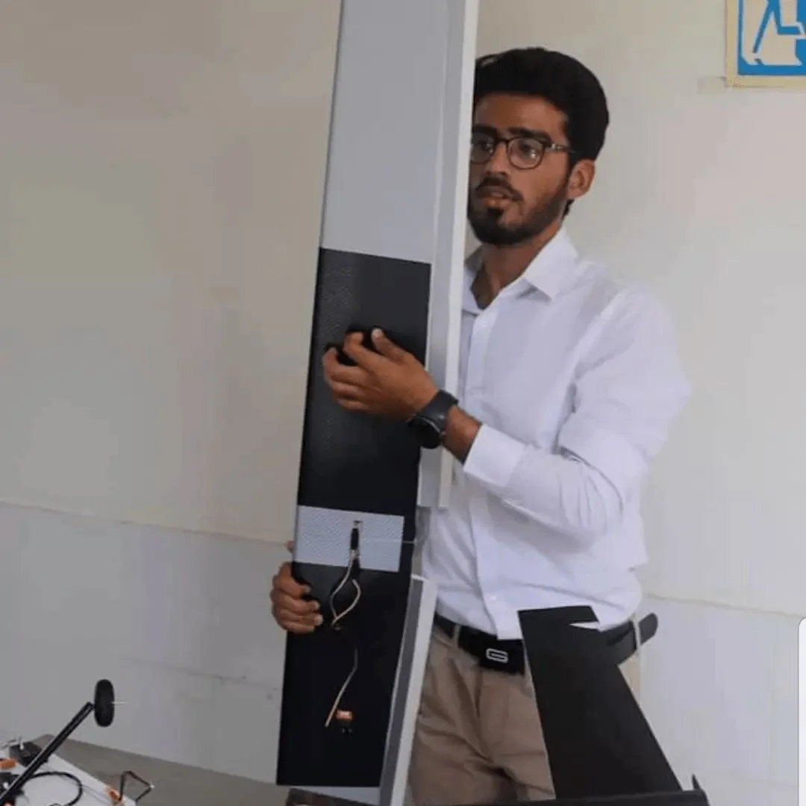
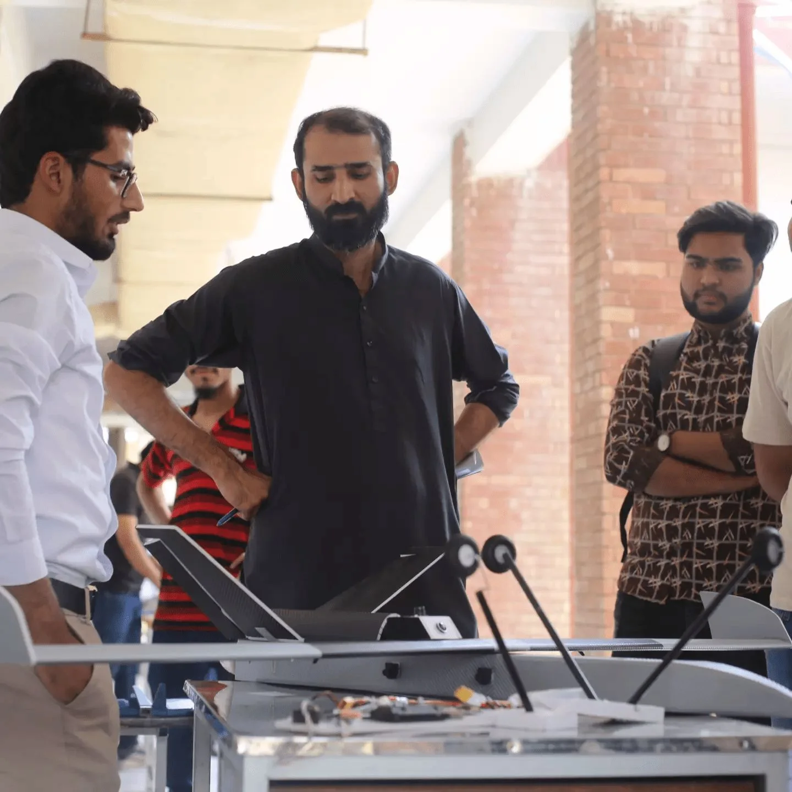
Carbon Fiber Tilt-Rotor VTOL UAV
Developed a lightweight, energy-efficient tilt-rotor VTOL UAV with a carbon fiber airframe and aluminum structure. Wings were manufactured using vacuum infusion, reducing material waste while improving surface quality and structural performance. The platform combines vertical takeoff and landing with efficient fixed-wing cruise, enabling versatile deployment without a runway.
Integrated Pixhawk for advanced flight control and mission planning, with structural integrity verified through body analysis across multiple flight conditions. Completed 10+ hybrid autonomous missions using Mission Planner. Secured 3rd place at a Computer Vision and Robotics Exhibition and 6th place in a nationwide UAS challenge.
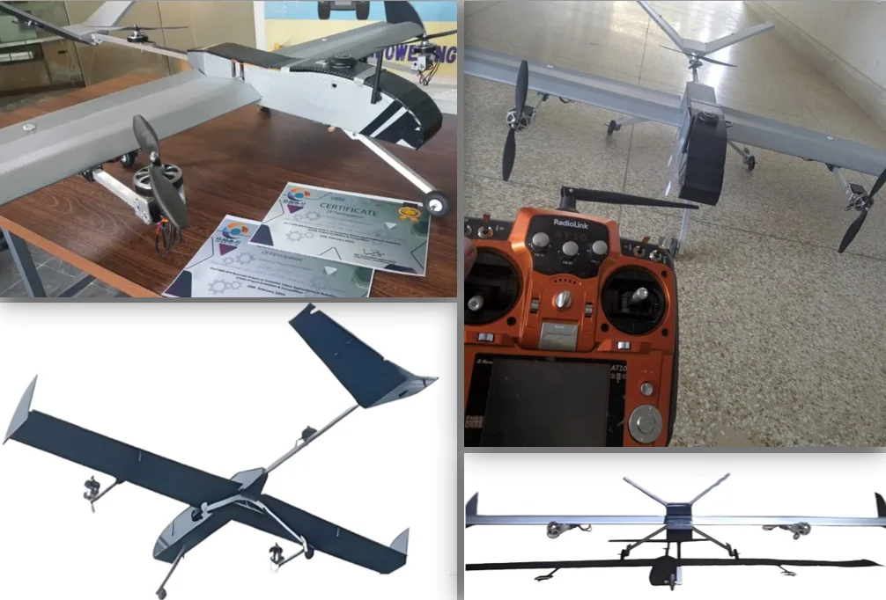
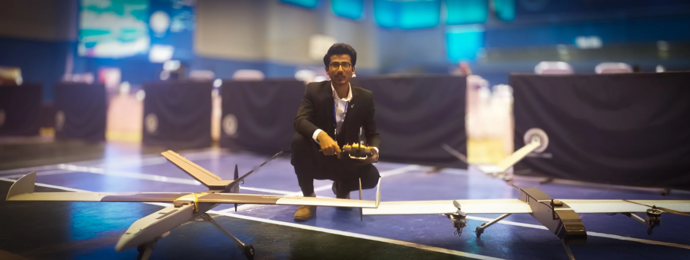
AI-Powered Agricultural Hexacopter: Spraying & Crop Monitoring
Designed and developed an AI-powered hexacopter for precision agricultural operations, combining autonomous crop health monitoring with adaptive, real-time pesticide, fertiliser, and nutrient spraying. The platform directly addresses inefficiencies in conventional agricultural spraying, including chemical overuse, uneven coverage, and late-stage crop disease detection, by replacing manual judgement with continuous, data-driven decision-making.
The onboard Jetson Nano vision system, trained on field data from 100+ agricultural sites, performs real-time multispectral crop health analysis and classifies stress conditions across diverse crop types. Adaptive spraying algorithms modulate spray rate and spatial coverage based on detected conditions, significantly reducing chemical waste while improving yield outcomes. Autonomous navigation with dynamic path adjustment ensures complete field coverage with minimal operator input, while the rugged, weather-resistant airframe and high-payload capacity support year-round large-scale farmland operations.
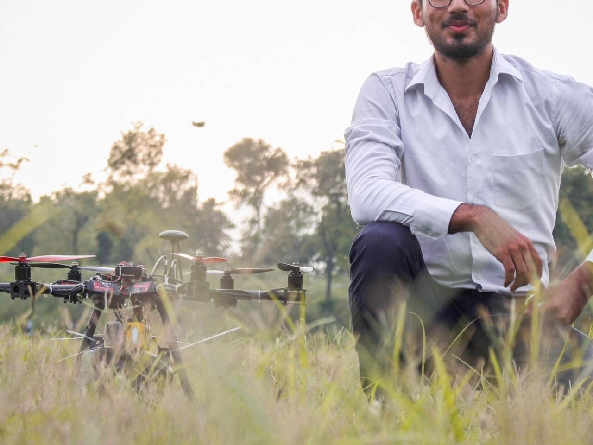
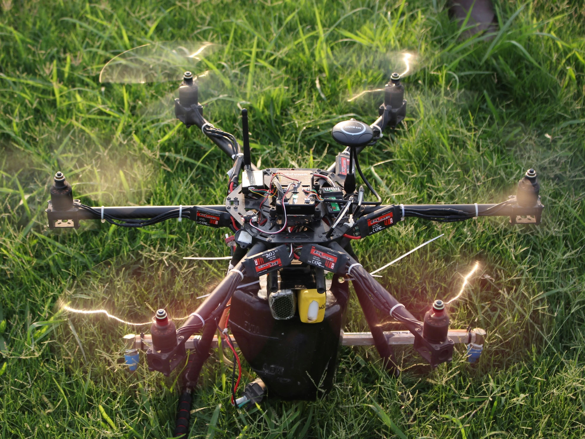
Heavy-Duty Trailer: Structural Design & FEA Validation
Designed and validated a heavy-duty trailer for a 1000 kg payload with a target factor of safety exceeding 2.0, balancing structural robustness with cost-efficiency and manufacturability. The chassis uses C-section carbon steel beams with a reinforced load grid, precision hinge mounts, and leaf spring fixtures engineered for long-term reliability under repeated loading.
FEA analysis confirmed a chassis FOS of 2.7 with a natural frequency range of 403–3276 Hz, comfortably clear of operational excitation frequencies. Axle verification achieved FOS 2.0 with a 60.3 Hz natural frequency. Leaf springs and M10 bolts were independently validated under full load conditions. The final design came in at 256.7 kg with an estimated manufacturing cost of Rs. 124k. The design was optimised for strength, vibration safety, and direct manufacturing readiness.
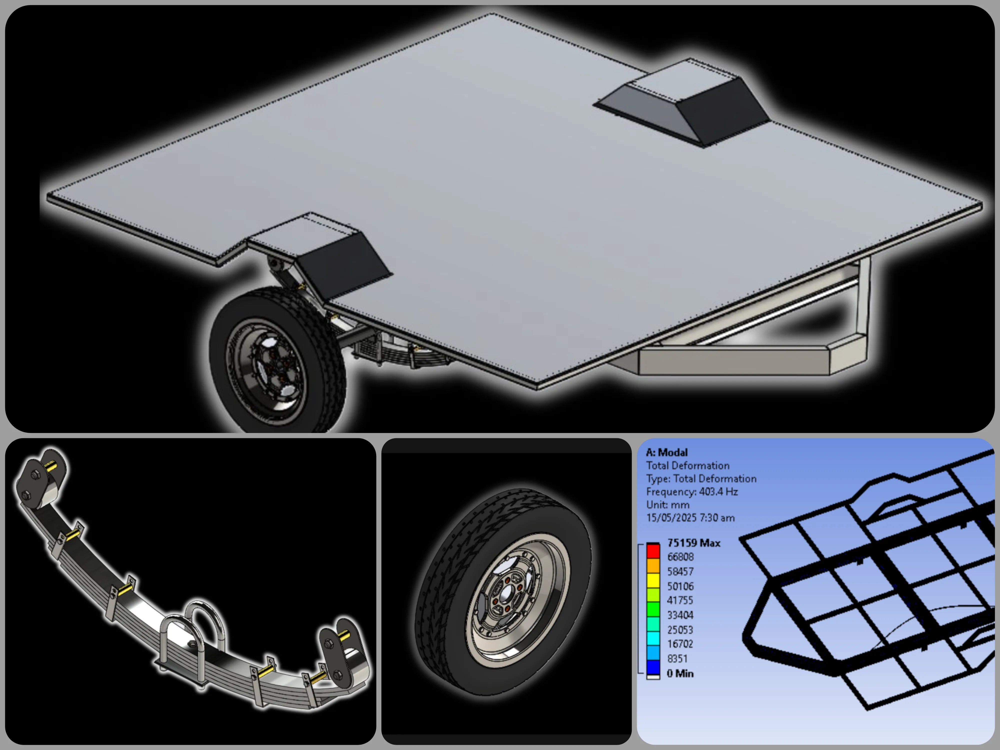
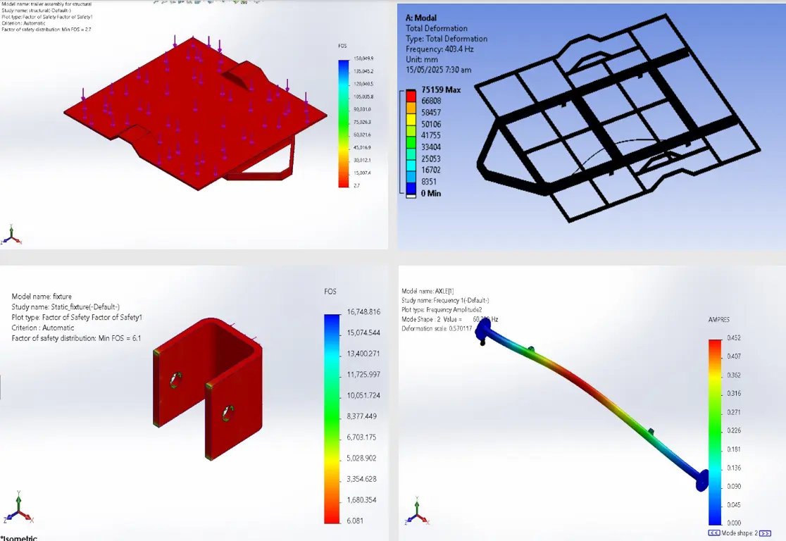
Dune Buggy: Space Frame Design & Structural Analysis
Designed and analysed a tubular steel space-frame dune buggy optimised for off-road performance and structural safety. The chassis integrates a full roll cage, 4-wheel independent suspension with coilover dampers, and a dedicated battery and electronics bay, reflecting a hybrid or electric drivetrain architecture. The top-down layout was optimised for balanced weight distribution and suspension geometry, with mounting points for all major drivetrain and chassis components.
Structural validation was performed through FEA using SolidWorks Simulation. Resultant displacement analysis showed a maximum deformation of 0.12 mm under load, while equivalent strain remained within acceptable limits (max 6.921e-05), confirming the frame's rigidity and structural integrity across static loading conditions. The results validate the space frame geometry for the intended off-road use case.
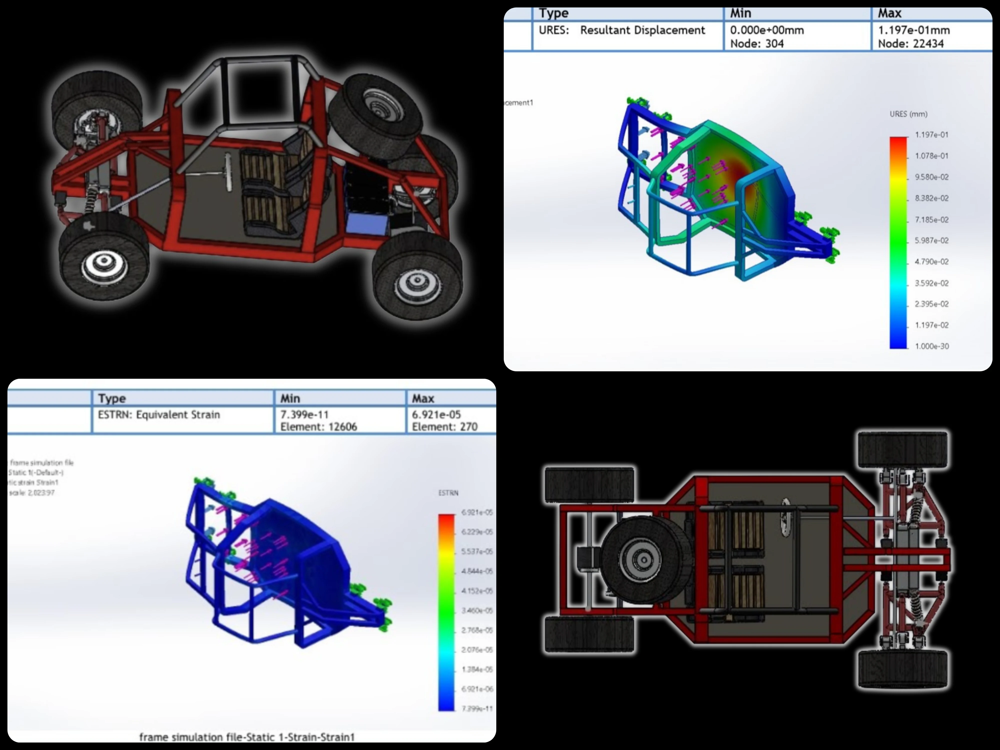
UAV Wing Assembly: Slat, Flap & Aileron Integration
Designed a fully integrated UAV wing assembly incorporating three independently actuated control surfaces: a leading-edge slat for high-lift augmentation, a trailing-edge flap for camber and lift enhancement, and an aileron for roll control. All surfaces are servo-actuated via SG90 micro servos connected through pushrod linkage mechanisms, providing precise, low-friction control authority across the full deflection range.
The wing structure is built around a carbon spar as the primary load-carrying member, with mixed-material construction for the remaining components. Servo deflection ranges are 25–45° for the slat and 20–30° for the flap and aileron. The design was documented to full engineering drawing standard, including an exploded assembly drawing with BOM, section views (A-A, B-B), and detail views of all servo mounting and pushrod locking interfaces.